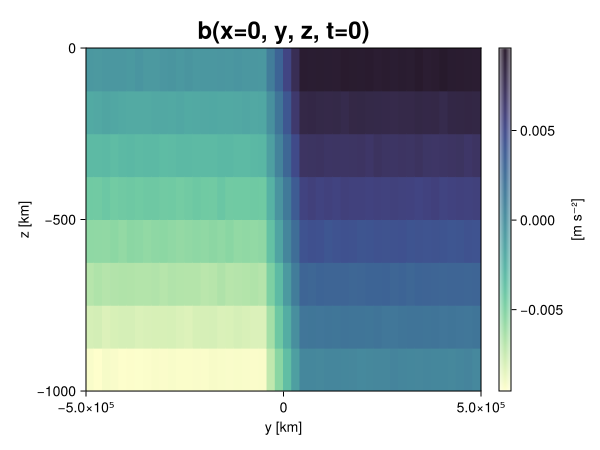
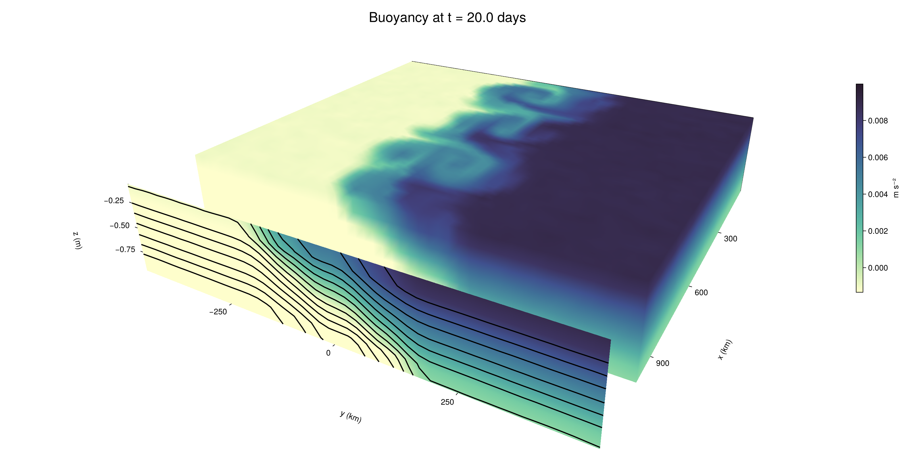

Baroclinic adjustment
In this example, we simulate the evolution and equilibration of a baroclinically unstable front.
Install dependencies
First let's make sure we have all required packages installed.
using Pkg
pkg"add Oceananigans, CairoMakie"using Oceananigans
using Oceananigans.UnitsGrid
We use a three-dimensional channel that is periodic in the x direction:
Lx = 1000kilometers # east-west extent [m]
Ly = 1000kilometers # north-south extent [m]
Lz = 1kilometers # depth [m]
grid = RectilinearGrid(size = (48, 48, 8),
x = (0, Lx),
y = (-Ly/2, Ly/2),
z = (-Lz, 0),
topology = (Periodic, Bounded, Bounded))48×48×8 RectilinearGrid{Float64, Periodic, Bounded, Bounded} on CPU with 3×3×3 halo
├── Periodic x ∈ [0.0, 1.0e6) regularly spaced with Δx=20833.3
├── Bounded y ∈ [-500000.0, 500000.0] regularly spaced with Δy=20833.3
└── Bounded z ∈ [-1000.0, 0.0] regularly spaced with Δz=125.0Model
We built a HydrostaticFreeSurfaceModel with an ImplicitFreeSurface solver. Regarding Coriolis, we use a beta-plane centered at 45° South.
model = HydrostaticFreeSurfaceModel(; grid,
coriolis = BetaPlane(latitude = -45),
buoyancy = BuoyancyTracer(),
tracers = :b,
momentum_advection = WENO(),
tracer_advection = WENO())HydrostaticFreeSurfaceModel{CPU, RectilinearGrid}(time = 0 seconds, iteration = 0)
├── grid: 48×48×8 RectilinearGrid{Float64, Periodic, Bounded, Bounded} on CPU with 3×3×3 halo
├── timestepper: QuasiAdamsBashforth2TimeStepper
├── tracers: b
├── closure: Nothing
├── buoyancy: BuoyancyTracer with ĝ = NegativeZDirection()
├── free surface: ImplicitFreeSurface with gravitational acceleration 9.80665 m s⁻²
│ └── solver: FFTImplicitFreeSurfaceSolver
├── advection scheme:
│ ├── momentum: WENO reconstruction order 5
│ └── b: WENO reconstruction order 5
└── coriolis: BetaPlane{Float64}We start our simulation from rest with a baroclinically unstable buoyancy distribution. We use ramp(y, Δy), defined below, to specify a front with width Δy and horizontal buoyancy gradient M². We impose the front on top of a vertical buoyancy gradient N² and a bit of noise.
"""
ramp(y, Δy)
Linear ramp from 0 to 1 between -Δy/2 and +Δy/2.
For example:
```
y < -Δy/2 => ramp = 0
-Δy/2 < y < -Δy/2 => ramp = y / Δy
y > Δy/2 => ramp = 1
```
"""
ramp(y, Δy) = min(max(0, y/Δy + 1/2), 1)
N² = 1e-5 # [s⁻²] buoyancy frequency / stratification
M² = 1e-7 # [s⁻²] horizontal buoyancy gradient
Δy = 100kilometers # width of the region of the front
Δb = Δy * M² # buoyancy jump associated with the front
ϵb = 1e-2 * Δb # noise amplitude
bᵢ(x, y, z) = N² * z + Δb * ramp(y, Δy) + ϵb * randn()
set!(model, b=bᵢ)Let's visualize the initial buoyancy distribution.
using CairoMakie
# Build coordinates with units of kilometers
x, y, z = 1e-3 .* nodes(grid, (Center(), Center(), Center()))
b = model.tracers.b
fig, ax, hm = heatmap(view(b, 1, :, :),
colormap = :deep,
axis = (xlabel = "y [km]",
ylabel = "z [km]",
title = "b(x=0, y, z, t=0)",
titlesize = 24))
Colorbar(fig[1, 2], hm, label = "[m s⁻²]")
fig
Simulation
Now let's build a Simulation.
simulation = Simulation(model, Δt=20minutes, stop_time=20days)Simulation of HydrostaticFreeSurfaceModel{CPU, RectilinearGrid}(time = 0 seconds, iteration = 0)
├── Next time step: 20 minutes
├── Elapsed wall time: 0 seconds
├── Wall time per iteration: NaN days
├── Stop time: 20 days
├── Stop iteration : Inf
├── Wall time limit: Inf
├── Callbacks: OrderedDict with 4 entries:
│ ├── stop_time_exceeded => Callback of stop_time_exceeded on IterationInterval(1)
│ ├── stop_iteration_exceeded => Callback of stop_iteration_exceeded on IterationInterval(1)
│ ├── wall_time_limit_exceeded => Callback of wall_time_limit_exceeded on IterationInterval(1)
│ └── nan_checker => Callback of NaNChecker for u on IterationInterval(100)
├── Output writers: OrderedDict with no entries
└── Diagnostics: OrderedDict with no entriesWe add a TimeStepWizard callback to adapt the simulation's time-step,
conjure_time_step_wizard!(simulation, IterationInterval(20), cfl=0.2, max_Δt=20minutes)Also, we add a callback to print a message about how the simulation is going,
using Printf
wall_clock = Ref(time_ns())
function print_progress(sim)
u, v, w = model.velocities
progress = 100 * (time(sim) / sim.stop_time)
elapsed = (time_ns() - wall_clock[]) / 1e9
@printf("[%05.2f%%] i: %d, t: %s, wall time: %s, max(u): (%6.3e, %6.3e, %6.3e) m/s, next Δt: %s\n",
progress, iteration(sim), prettytime(sim), prettytime(elapsed),
maximum(abs, u), maximum(abs, v), maximum(abs, w), prettytime(sim.Δt))
wall_clock[] = time_ns()
return nothing
end
add_callback!(simulation, print_progress, IterationInterval(100))Diagnostics/Output
Here, we save the buoyancy, $b$, at the edges of our domain as well as the zonal ($x$) average of buoyancy.
u, v, w = model.velocities
ζ = ∂x(v) - ∂y(u)
B = Average(b, dims=1)
U = Average(u, dims=1)
V = Average(v, dims=1)
filename = "baroclinic_adjustment"
save_fields_interval = 0.5day
slicers = (east = (grid.Nx, :, :),
north = (:, grid.Ny, :),
bottom = (:, :, 1),
top = (:, :, grid.Nz))
for side in keys(slicers)
indices = slicers[side]
simulation.output_writers[side] = JLD2OutputWriter(model, (; b, ζ);
filename = filename * "_$(side)_slice",
schedule = TimeInterval(save_fields_interval),
overwrite_existing = true,
indices)
end
simulation.output_writers[:zonal] = JLD2OutputWriter(model, (; b=B, u=U, v=V);
filename = filename * "_zonal_average",
schedule = TimeInterval(save_fields_interval),
overwrite_existing = true)JLD2OutputWriter scheduled on TimeInterval(12 hours):
├── filepath: baroclinic_adjustment_zonal_average.jld2
├── 3 outputs: (b, u, v)
├── array type: Array{Float64}
├── including: [:grid, :coriolis, :buoyancy, :closure]
├── file_splitting: NoFileSplitting
└── file size: 31.6 KiBNow we're ready to run.
@info "Running the simulation..."
run!(simulation)
@info "Simulation completed in " * prettytime(simulation.run_wall_time)[ Info: Running the simulation...
[ Info: Initializing simulation...
[00.00%] i: 0, t: 0 seconds, wall time: 30.810 seconds, max(u): (0.000e+00, 0.000e+00, 0.000e+00) m/s, next Δt: 20 minutes
[ Info: ... simulation initialization complete (29.962 seconds)
[ Info: Executing initial time step...
[ Info: ... initial time step complete (18.704 seconds).
[06.94%] i: 100, t: 1.389 days, wall time: 38.196 seconds, max(u): (1.289e-01, 1.206e-01, 1.518e-03) m/s, next Δt: 20 minutes
[13.89%] i: 200, t: 2.778 days, wall time: 897.527 ms, max(u): (2.220e-01, 1.767e-01, 1.699e-03) m/s, next Δt: 20 minutes
[20.83%] i: 300, t: 4.167 days, wall time: 866.678 ms, max(u): (3.183e-01, 2.649e-01, 1.737e-03) m/s, next Δt: 20 minutes
[27.78%] i: 400, t: 5.556 days, wall time: 899.249 ms, max(u): (4.209e-01, 3.671e-01, 1.769e-03) m/s, next Δt: 20 minutes
[34.72%] i: 500, t: 6.944 days, wall time: 908.268 ms, max(u): (4.823e-01, 5.054e-01, 1.898e-03) m/s, next Δt: 20 minutes
[41.67%] i: 600, t: 8.333 days, wall time: 897.678 ms, max(u): (6.539e-01, 8.218e-01, 2.398e-03) m/s, next Δt: 20 minutes
[48.61%] i: 700, t: 9.722 days, wall time: 902.106 ms, max(u): (9.718e-01, 1.229e+00, 3.170e-03) m/s, next Δt: 20 minutes
[55.56%] i: 800, t: 11.111 days, wall time: 885.119 ms, max(u): (1.269e+00, 1.337e+00, 4.648e-03) m/s, next Δt: 20 minutes
[62.50%] i: 900, t: 12.500 days, wall time: 813.064 ms, max(u): (1.454e+00, 1.421e+00, 4.829e-03) m/s, next Δt: 20 minutes
[69.44%] i: 1000, t: 13.889 days, wall time: 910.894 ms, max(u): (1.448e+00, 1.061e+00, 3.735e-03) m/s, next Δt: 20 minutes
[76.39%] i: 1100, t: 15.278 days, wall time: 908.810 ms, max(u): (1.435e+00, 1.217e+00, 3.394e-03) m/s, next Δt: 20 minutes
[83.33%] i: 1200, t: 16.667 days, wall time: 857.247 ms, max(u): (1.384e+00, 1.108e+00, 2.608e-03) m/s, next Δt: 20 minutes
[90.28%] i: 1300, t: 18.056 days, wall time: 909.376 ms, max(u): (1.407e+00, 1.104e+00, 2.042e-03) m/s, next Δt: 20 minutes
[97.22%] i: 1400, t: 19.444 days, wall time: 932.858 ms, max(u): (1.389e+00, 1.142e+00, 1.986e-03) m/s, next Δt: 20 minutes
[ Info: Simulation is stopping after running for 1.080 minutes.
[ Info: Simulation time 20 days equals or exceeds stop time 20 days.
[ Info: Simulation completed in 1.081 minutes
Visualization
All that's left is to make a pretty movie. Actually, we make two visualizations here. First, we illustrate how to make a 3D visualization with Makie's Axis3 and Makie.surface. Then we make a movie in 2D. We use CairoMakie in this example, but note that using GLMakie is more convenient on a system with OpenGL, as figures will be displayed on the screen.
using CairoMakieThree-dimensional visualization
We load the saved buoyancy output on the top, north, and east surface as FieldTimeSerieses.
filename = "baroclinic_adjustment"
sides = keys(slicers)
slice_filenames = NamedTuple(side => filename * "_$(side)_slice.jld2" for side in sides)
b_timeserieses = (east = FieldTimeSeries(slice_filenames.east, "b"),
north = FieldTimeSeries(slice_filenames.north, "b"),
top = FieldTimeSeries(slice_filenames.top, "b"))
B_timeseries = FieldTimeSeries(filename * "_zonal_average.jld2", "b")
times = B_timeseries.times
grid = B_timeseries.grid48×48×8 RectilinearGrid{Float64, Periodic, Bounded, Bounded} on CPU with 3×3×3 halo
├── Periodic x ∈ [0.0, 1.0e6) regularly spaced with Δx=20833.3
├── Bounded y ∈ [-500000.0, 500000.0] regularly spaced with Δy=20833.3
└── Bounded z ∈ [-1000.0, 0.0] regularly spaced with Δz=125.0We build the coordinates. We rescale horizontal coordinates to kilometers.
xb, yb, zb = nodes(b_timeserieses.east)
xb = xb ./ 1e3 # convert m -> km
yb = yb ./ 1e3 # convert m -> km
Nx, Ny, Nz = size(grid)
x_xz = repeat(x, 1, Nz)
y_xz_north = y[end] * ones(Nx, Nz)
z_xz = repeat(reshape(z, 1, Nz), Nx, 1)
x_yz_east = x[end] * ones(Ny, Nz)
y_yz = repeat(y, 1, Nz)
z_yz = repeat(reshape(z, 1, Nz), grid.Ny, 1)
x_xy = x
y_xy = y
z_xy_top = z[end] * ones(grid.Nx, grid.Ny)Then we create a 3D axis. We use zonal_slice_displacement to control where the plot of the instantaneous zonal average flow is located.
fig = Figure(size = (1600, 800))
zonal_slice_displacement = 1.2
ax = Axis3(fig[2, 1],
aspect=(1, 1, 1/5),
xlabel = "x (km)",
ylabel = "y (km)",
zlabel = "z (m)",
xlabeloffset = 100,
ylabeloffset = 100,
zlabeloffset = 100,
limits = ((x[1], zonal_slice_displacement * x[end]), (y[1], y[end]), (z[1], z[end])),
elevation = 0.45,
azimuth = 6.8,
xspinesvisible = false,
zgridvisible = false,
protrusions = 40,
perspectiveness = 0.7)Axis3()We use data from the final savepoint for the 3D plot. Note that this plot can easily be animated by using Makie's Observable. To dive into Observables, check out Makie.jl's Documentation.
n = length(times)41Now let's make a 3D plot of the buoyancy and in front of it we'll use the zonally-averaged output to plot the instantaneous zonal-average of the buoyancy.
b_slices = (east = interior(b_timeserieses.east[n], 1, :, :),
north = interior(b_timeserieses.north[n], :, 1, :),
top = interior(b_timeserieses.top[n], :, :, 1))
# Zonally-averaged buoyancy
B = interior(B_timeseries[n], 1, :, :)
clims = 1.1 .* extrema(b_timeserieses.top[n][:])
kwargs = (colorrange=clims, colormap=:deep, shading=NoShading)
surface!(ax, x_yz_east, y_yz, z_yz; color = b_slices.east, kwargs...)
surface!(ax, x_xz, y_xz_north, z_xz; color = b_slices.north, kwargs...)
surface!(ax, x_xy, y_xy, z_xy_top; color = b_slices.top, kwargs...)
sf = surface!(ax, zonal_slice_displacement .* x_yz_east, y_yz, z_yz; color = B, kwargs...)
contour!(ax, y, z, B; transformation = (:yz, zonal_slice_displacement * x[end]),
levels = 15, linewidth = 2, color = :black)
Colorbar(fig[2, 2], sf, label = "m s⁻²", height = Relative(0.4), tellheight=false)
title = "Buoyancy at t = " * string(round(times[n] / day, digits=1)) * " days"
fig[1, 1:2] = Label(fig, title; fontsize = 24, tellwidth = false, padding = (0, 0, -120, 0))
rowgap!(fig.layout, 1, Relative(-0.2))
colgap!(fig.layout, 1, Relative(-0.1))
save("baroclinic_adjustment_3d.png", fig)
Two-dimensional movie
We make a 2D movie that shows buoyancy $b$ and vertical vorticity $ζ$ at the surface, as well as the zonally-averaged zonal and meridional velocities $U$ and $V$ in the $(y, z)$ plane. First we load the FieldTimeSeries and extract the additional coordinates we'll need for plotting
ζ_timeseries = FieldTimeSeries(slice_filenames.top, "ζ")
U_timeseries = FieldTimeSeries(filename * "_zonal_average.jld2", "u")
B_timeseries = FieldTimeSeries(filename * "_zonal_average.jld2", "b")
V_timeseries = FieldTimeSeries(filename * "_zonal_average.jld2", "v")
xζ, yζ, zζ = nodes(ζ_timeseries)
yv = ynodes(V_timeseries)
xζ = xζ ./ 1e3 # convert m -> km
yζ = yζ ./ 1e3 # convert m -> km
yv = yv ./ 1e3 # convert m -> km49-element Vector{Float64}:
-500.0
-479.1666666666667
-458.3333333333333
-437.5
-416.6666666666667
-395.8333333333333
-375.0
-354.1666666666667
-333.3333333333333
-312.5
-291.6666666666667
-270.8333333333333
-250.0
-229.16666666666666
-208.33333333333334
-187.5
-166.66666666666666
-145.83333333333334
-125.0
-104.16666666666667
-83.33333333333333
-62.5
-41.666666666666664
-20.833333333333332
0.0
20.833333333333332
41.666666666666664
62.5
83.33333333333333
104.16666666666667
125.0
145.83333333333334
166.66666666666666
187.5
208.33333333333334
229.16666666666666
250.0
270.8333333333333
291.6666666666667
312.5
333.3333333333333
354.1666666666667
375.0
395.8333333333333
416.6666666666667
437.5
458.3333333333333
479.1666666666667
500.0Next, we set up a plot with 4 panels. The top panels are large and square, while the bottom panels get a reduced aspect ratio through rowsize!.
set_theme!(Theme(fontsize=24))
fig = Figure(size=(1800, 1000))
axb = Axis(fig[1, 2], xlabel="x (km)", ylabel="y (km)", aspect=1)
axζ = Axis(fig[1, 3], xlabel="x (km)", ylabel="y (km)", aspect=1, yaxisposition=:right)
axu = Axis(fig[2, 2], xlabel="y (km)", ylabel="z (m)")
axv = Axis(fig[2, 3], xlabel="y (km)", ylabel="z (m)", yaxisposition=:right)
rowsize!(fig.layout, 2, Relative(0.3))To prepare a plot for animation, we index the timeseries with an Observable,
n = Observable(1)
b_top = @lift interior(b_timeserieses.top[$n], :, :, 1)
ζ_top = @lift interior(ζ_timeseries[$n], :, :, 1)
U = @lift interior(U_timeseries[$n], 1, :, :)
V = @lift interior(V_timeseries[$n], 1, :, :)
B = @lift interior(B_timeseries[$n], 1, :, :)Observable([-0.009373721007523171 -0.008117707231894235 -0.00685937876441154 -0.005625468707378656 -0.004403278905086056 -0.0031444780099688895 -0.0018772130683976987 -0.0006245036570479543; -0.009381968524012007 -0.008117680242442688 -0.006870141336088757 -0.005627369497027517 -0.004378536828595756 -0.003110094453429023 -0.00186259320669422 -0.0006224875241571352; -0.009381933582501105 -0.008124531907026654 -0.0069015818452169515 -0.0056171563750546044 -0.004377514562533838 -0.0031230422091405134 -0.0018911799898937264 -0.0006088076498246452; -0.009360156659395583 -0.00813900168151721 -0.00686702860201328 -0.005626755603373226 -0.004372670246160335 -0.0031403582976058573 -0.0018769831684699266 -0.0006282488020534798; -0.009381145552454452 -0.008110724792118206 -0.006841107408526292 -0.005647667113515044 -0.0043711438982575465 -0.003107980734788873 -0.0018657870036505148 -0.0006219299728348868; -0.009368619021803177 -0.00812455775635098 -0.006841450341715293 -0.005617550114769038 -0.004394961005042583 -0.003133650704690662 -0.0018715051349686505 -0.0006414064431035164; -0.009373454114462262 -0.008125617997834187 -0.006881642716894812 -0.005616144569588193 -0.004373768617955534 -0.0031306113906667704 -0.0018954497194774787 -0.0006453130716728616; -0.0093834326868338 -0.008146700405205631 -0.006877854386305654 -0.005620034912914751 -0.00440029093378919 -0.0031188199816465935 -0.001863639853742943 -0.000618329989121099; -0.009386823574477704 -0.008133911127363683 -0.006872519279319635 -0.00562283130925937 -0.0043958305981069475 -0.003144922416875593 -0.001877743903470083 -0.0006185967862143768; -0.009355888515981193 -0.008132329564791825 -0.006873476911225046 -0.005616877386431264 -0.004380578384477432 -0.003127850340761735 -0.0018627588595656111 -0.0006532991141396332; -0.009366088703230262 -0.008143540560540842 -0.0068743923726483054 -0.005604459163626258 -0.004356526400487378 -0.003124510562171794 -0.0018686184776238865 -0.0005977710239502483; -0.009357135719200688 -0.00809365882519833 -0.006873351529867682 -0.005632415479162434 -0.00439435850591769 -0.003131432354713186 -0.0018721749040681995 -0.0006189614147343992; -0.009371861592892902 -0.008122417364491187 -0.0068539330190860075 -0.005630159290121522 -0.004368405360081464 -0.0031278939280215286 -0.001896336891206854 -0.0006142837498352581; -0.009363966466132063 -0.00812655316406304 -0.006893755818130463 -0.005636768352665247 -0.004382039363111003 -0.003083713817882724 -0.00188960064037416 -0.000612123968885758; -0.00938313986756402 -0.008116687796587628 -0.006868195627006385 -0.005647410910587211 -0.004384439666440959 -0.0031108465162834457 -0.0018984845518319072 -0.0006278114771069076; -0.00936799870901739 -0.008125558763673288 -0.00687342333539268 -0.005620423307295321 -0.0043740070159577855 -0.003113587698128348 -0.0018647764551843681 -0.0006271875552484447; -0.009375958129285988 -0.008150712512461534 -0.006875227544899475 -0.0056069360444694 -0.0043738789688934 -0.0031172215887098034 -0.0018630795153620216 -0.0006170172531714619; -0.009379324618566413 -0.008138087964657993 -0.006885874552422664 -0.005647039660333297 -0.004397724310960388 -0.0031384122236150507 -0.0019004837998454463 -0.0006226757722390306; -0.009394116206754802 -0.008113801909156048 -0.006889958527342056 -0.005646905129173257 -0.004395658128390558 -0.0031573027751597795 -0.001871323754489191 -0.0006209549447926586; -0.009377966418178582 -0.008114848033955933 -0.00688780709114759 -0.005625848617929456 -0.004384828016842549 -0.0031298021382244745 -0.0018532733793905308 -0.000617176603998522; -0.009406637788653574 -0.008131636730408775 -0.006876933834290039 -0.005625761782966397 -0.004351613631885935 -0.003149649196787913 -0.0018658161483171485 -0.000618185805422177; -0.009359241573104256 -0.008110967904088938 -0.006857073727290968 -0.005630840961364131 -0.00437329169472641 -0.0031308840395902634 -0.0018952432747404958 -0.0006155423036568884; -0.007515271184560216 -0.006253998168983782 -0.005008476913092929 -0.0037402908305876857 -0.0025077780501212062 -0.0012589055467825433 7.722953131627887e-6 0.0012259526577050282; -0.005396386677719557 -0.004175623136987483 -0.0029253757882439697 -0.0016791218224452658 -0.00040229322447624187 0.0008519557028968533 0.0020834091400466037 0.0033439395805250024; -0.0033146435305115036 -0.0020804968475513883 -0.0008340502329943067 0.0004459377172535488 0.0016455693435739737 0.0029178322437359325 0.004150894064650304 0.005430756744068556; -0.0012365270364678989 -4.474348405783635e-6 0.0012372937927678876 0.0024750534805804956 0.0037525961459755433 0.0050373087139215416 0.00624359656083763 0.0074878640056229165; 0.0006329798225553678 0.0018637948776399783 0.003137654878260919 0.004354760630023734 0.005617244226841407 0.006854806452650551 0.008131056563722412 0.009410634827150889; 0.0006376401165883611 0.0018664078094785548 0.003121705141428999 0.004365836337243964 0.005621371078443069 0.00686165748249717 0.008135253130325365 0.009388357194290887; 0.0006448514368727528 0.0018716355268252754 0.003131134305263081 0.004398823672473344 0.0056308883184442516 0.006871717501262032 0.008139945294776194 0.0093658588404773; 0.0006160066090865474 0.0018738443867669476 0.0031043679860314065 0.004345991926124827 0.005624066507858071 0.006890520074241883 0.008133705692525273 0.00936925101451082; 0.0006238105829246565 0.0018693164822451156 0.0031205281293666585 0.004391424089403718 0.0056300532933877614 0.006861582769848647 0.008122415272289423 0.009382542328757177; 0.0006304537312542803 0.0018488881081208549 0.0031284918847744258 0.004379309253563828 0.005640027904813906 0.006869648503231258 0.008112284885347262 0.009377913358442612; 0.0006343773844110398 0.001900350130538569 0.003134265999781134 0.00439933963153297 0.005621613688113762 0.006875097448740806 0.00812129605457347 0.009386021308993436; 0.000623174918785478 0.0018778984980049648 0.003158451649765139 0.004366920111131703 0.00562449125649895 0.006907325358903275 0.008130442283398558 0.009379048288781732; 0.0006075957314977142 0.0018700674340580397 0.003131322240418282 0.00437195979808657 0.005590038828677898 0.006856385184461941 0.008145903926616486 0.009373233936752443; 0.00061646244646665 0.0018771046377087514 0.003130283207132715 0.004357478519606823 0.005618374283673767 0.006883314402631529 0.00809895641115882 0.009372693375600162; 0.0006147158079937099 0.0018510796771421638 0.003138591102154599 0.0043831509310663305 0.005613394497559282 0.006871513232713134 0.008108288346182903 0.009393833190401229; 0.0006451281565706277 0.0018522859797608568 0.0031149011293886996 0.004376751444117081 0.0056103044501484714 0.006863304085916566 0.00811983412766236 0.009377053475275284; 0.0006303990129784886 0.0018575565660774861 0.003156171907196258 0.004360016215502668 0.005640119623056537 0.0068880641696348775 0.008136084752238612 0.009398708702400484; 0.0006326848819287912 0.0018805763858102734 0.003127371218383232 0.004380167430667979 0.005616484755033207 0.006878878359870895 0.008115026661059632 0.009386103419435445; 0.0006392604998403118 0.0019105034301242628 0.003123540670145008 0.004401314558463115 0.005603686772749739 0.006871263865123216 0.008134681062872962 0.00935569445183577; 0.0006285315311403846 0.001876350630250551 0.003155354650688119 0.004383537382481079 0.005606723798288926 0.006883600157449202 0.008124442648384989 0.00938605247409833; 0.0006146499220620075 0.0018888390866163916 0.0031135620788574833 0.004399039158237325 0.005606368017610812 0.006877641902397351 0.008121981808014593 0.009356794580026348; 0.000601120309436444 0.0018626496224660942 0.0031342654990409967 0.004379515623226561 0.005636749419505676 0.006853589565810073 0.008115606499551732 0.009368262692848824; 0.0006100729367994291 0.0018753856174878701 0.003146266309383848 0.0043865698951895795 0.005627752156972002 0.006888672073979675 0.008124186568445232 0.009379672717187192; 0.0006211017264318338 0.0018387566469218674 0.0031343224600212266 0.004369196003166365 0.005613280990073012 0.006885914466624547 0.008120341989513901 0.009368650770866535; 0.0006270239649346794 0.0018635836674190714 0.0031380943113636026 0.004367948435143719 0.005616932424640247 0.006842017747118431 0.008126442808200398 0.009374648951528628; 0.0006608732043022568 0.001886269779290691 0.003114017631077729 0.004372141594591328 0.005605228958441743 0.006904468236868661 0.008119046207041023 0.009384675949881136])
and then build our plot:
hm = heatmap!(axb, xb, yb, b_top, colorrange=(0, Δb), colormap=:thermal)
Colorbar(fig[1, 1], hm, flipaxis=false, label="Surface b(x, y) (m s⁻²)")
hm = heatmap!(axζ, xζ, yζ, ζ_top, colorrange=(-5e-5, 5e-5), colormap=:balance)
Colorbar(fig[1, 4], hm, label="Surface ζ(x, y) (s⁻¹)")
hm = heatmap!(axu, yb, zb, U; colorrange=(-5e-1, 5e-1), colormap=:balance)
Colorbar(fig[2, 1], hm, flipaxis=false, label="Zonally-averaged U(y, z) (m s⁻¹)")
contour!(axu, yb, zb, B; levels=15, color=:black)
hm = heatmap!(axv, yv, zb, V; colorrange=(-1e-1, 1e-1), colormap=:balance)
Colorbar(fig[2, 4], hm, label="Zonally-averaged V(y, z) (m s⁻¹)")
contour!(axv, yb, zb, B; levels=15, color=:black)Finally, we're ready to record the movie.
frames = 1:length(times)
record(fig, filename * ".mp4", frames, framerate=8) do i
n[] = i
endThis page was generated using Literate.jl.